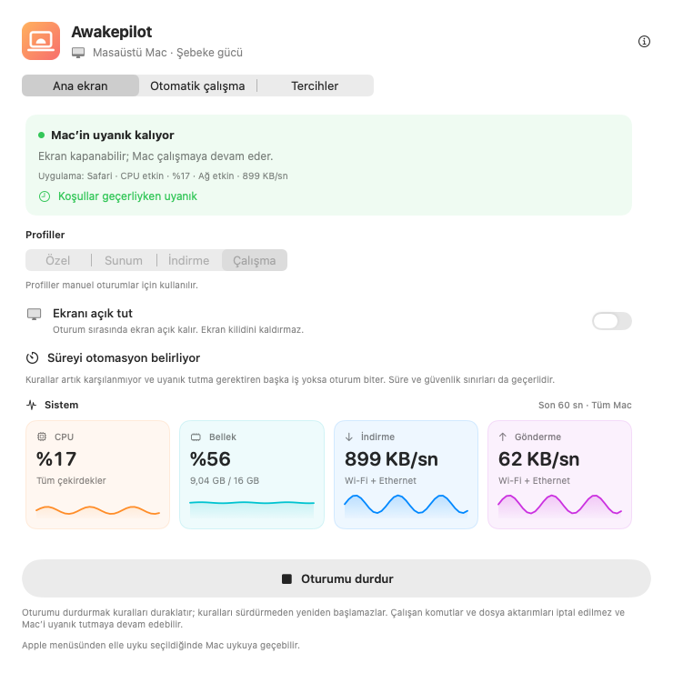
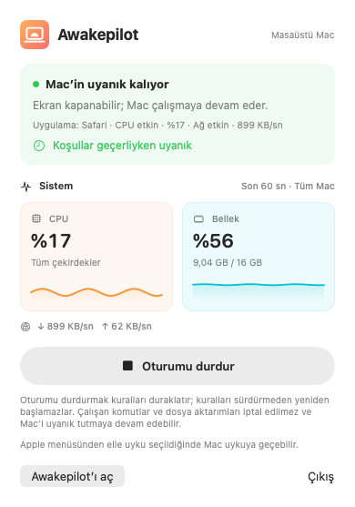
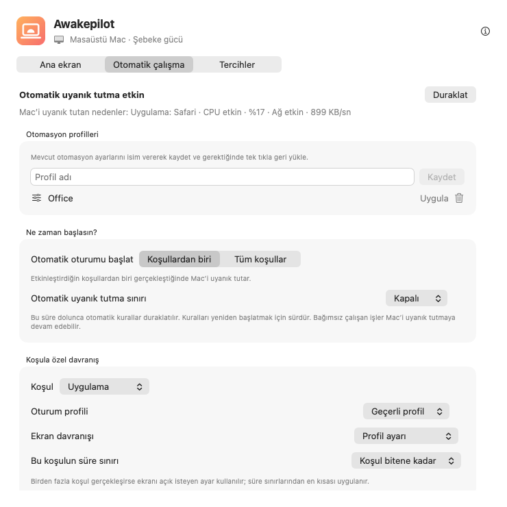

Esnek uyanık tutma oturumları
Süresiz, belirli bir süre boyunca veya tam bir tarih ve saate kadar uyanık kalın.
15m1h2h∞
Derleme, video dışa aktarma ve büyük dosya aktarımı sırasında Mac’iniz uykuya geçmesin. Bir süre belirleyin ya da izlenecek koşulları seçin. Başka bir etkin iş veya kural yoksa süre dolunca ya da koşullar sona erince Awakepilot uyanık tutmayı bırakır.


Bir süre boyunca uyanık tutun veya hangi durumlarda başlayacağını seçin. Awakepilot uyanık tutmayı bıraktığında Mac hemen uyutulmaz; kendi uyku ayarları uygulanır.
Süresiz, belirli bir süre boyunca veya tam bir tarih ve saate kadar uyanık kalın.
CPU, bellek, indirme ve gönderme etkinliğini anlaşılır canlı grafiklerle izleyin.
Önce izlenecek koşulları seçin. Örneğin bir uygulama açıkken, bir işlem çalışırken veya seçilen disk bağlıyken Mac’i uyanık tutun.
Pili korumak için uyanık tutmayı duraklatın. Ekran kapansa da Mac’in çalışmaya devam etmesini seçebilirsiniz.
Seçtiğiniz harici diski etkin tutmaya yardımcı olur. Bunun için diskte kendi küçük gizli dosyasını düzenli günceller.
Uyanık tutmanın ne zaman başladığını, neden devam ettiğini ve ne zaman bırakıldığını görün.

Awakepilot, Mac’i uyanık tutan uygulamaları, işlemleri ve diğer koşulları gösterir. Kurallar artık karşılanmıyor ve uyanık tutma gerektiren başka iş yoksa Mac kendi uyku ayarlarına dönebilir.
Bir uygulamanın açık olması, içinde bir işin sürdüğünü göstermez. CPU veya ağ kullanımının azalması da işin bittiğini doğrulamaz.
İzlenecek koşulları, ekran davranışını ve süre sınırını seçin. Etkin koşulları ve son değişiklikleri uygulamada görün.
Stüdyo ağında veya iş VPN’inde başlatın. Görüşmeler için ekranı açık tutun ve güvenlik sınırında durdurun.
Dışa aktarma işlemini adına göre izleyin. Ekranın kapanmasına izin verin. İşlem bittiğinde uyanık tutma gerektiren başka iş veya kural yoksa uyanık tutma sona erer.
Bir arşiv diski bağlandığında tepki verin, kopyalamayı koruyun ve Drive Alive’ı yalnızca seçilen yazılabilir birimde kullanın.
Bir koşul gerçekleştiğinde başlayın veya seçtiğiniz tüm koşulların aynı anda gerçekleşmesini isteyin. Örneğin yalnızca belirli bir Wi-Fi ağında ve harici disk bağlıyken çalışın.
Awakepilot, seçtiğiniz yazılabilir harici sürücülerde küçük bir işaret dosyasını yeniler. Başka bir uygulamanın dosyasının üzerine asla yazmaz ve Drive Alive kapatıldığında, sürücü yeniden bağlanmış olsa bile kendi işaretini kaldırır.
Bir uyanık tutma aracı sizi belirsizlikte bırakmamalı. Awakepilot, zaman çizelgesini her canlı CPU veya ağ örneğiyle doldurmadan anlamlı geçişleri kaydeder.
Ağ etkinliğini veya bağlı yedekleme diskini izleyin. Etkinlik seçtiğiniz süre boyunca sınırın altında kalınca veya disk ayrılınca bu koşul sona erer.
İşlemi adına göre izleyin veya bir komutun çalıştığı süre boyunca Mac’i uyanık tutun.
Ekranı açık tutan profili yalnızca sunum koşulu etkinken uygulayın.
Güç ve süre korumaları uygulanmaya devam ederken Mac’i erişilebilir tutun.
Hesap yok. Reklam yok. Analiz yok. Telemetri yok. Awakepilot ayarlarını yerel olarak saklar ve güncelleme denetimleri ve resmî paket indirmeleri için Awakepilot sitesine bağlanır.
Gizlilik ayrıntılarını okuyun →macOS için imzalı ve Apple tarafından onaylanmış evrensel derlemeyi indirin.
Uygulamalar klasörüne sürükleyin. Hesap veya abonelik gerekmez.